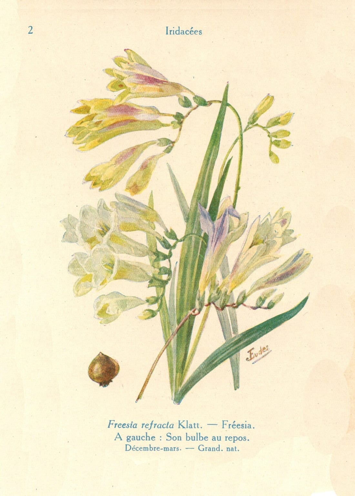

Why buy flowers꽃을 살 새로운 이유
꽃을 고르는 귀찮음을 줄이고,
꽃을 살 새로운 이유를 만듭니다

도판 — dearbloom 도감에 쓰는
퍼블릭 도메인 세밀화
사용자 가치
- 한 번의 흐름에서 꽃·의미·안전·문구·구매 해결
- 인기순이 아니라 관계와 상황에 맞는 선택
- 위험한 꽃 선물을 사전에 방지
- “왜 이 꽃인지” 자신의 말로 설명 가능
확장 구조
의미 있는
꽃 발견 추천 결과
선택 편지 ·
공유 판매처 · 지역
꽃집 이동 다음 추천에
선호 반영
꽃 발견 추천 결과
선택 편지 ·
공유 판매처 · 지역
꽃집 이동 다음 추천에
선호 반영
사업 모델
1
꽃 판매처·지역 꽃집 제휴 및 구매 전환
2
지역·수령일 기반 꽃집 예약·문의
3
꽃집 고객 상담용 추천 도구
4
선물 플랫폼·꽃 쇼핑몰용 추천 위젯 / API
5
관계 기록·기념일 알림·고급 편지 프리미엄
초기 검증 지표목표 가설
추천 완료율60% 이상
추천 적합도4.0/5 이상
메시지·편지 행동률20% 이상
저장·공유율15% 이상
구매처 이동률10% 이상
DearBloom은 꽃을 판매하는 서비스보다 먼저, 꽃을 선택할 이유를 만들어 주는 서비스입니다.